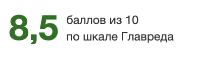
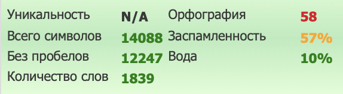

Партнерские программы в iGaming: структура, комиссии и правила выбора партнера
Любая гемблинг-партнерка строится на трех элементах — продукте, ГЕО и модели оплаты. Однако ставка комиссии не отражает реальную доходность. На заработок также влияют качество аудитории, местное регулирование, правила расчета NGR и условия выплат.
Поэтому этого партнерская программа казино оценивается по совокупности всех перечисленных параметров. Дополнительно учитывают репутацию бренда, условия переноса негативного баланса и ограничения в договоре.
Что такое партнерские программы онлайн-казино и как устроен рынок
Партнерская программа — это формат сотрудничества, где вебмастер приводит игроков по реферальной ссылке и получает деньги за целевое действие или долю от их активности. В гемблинге это обычно регистрация, первый депозит или последующие ставки.
В этой цепочке оператор отвечает за продукт и пользователей, партнерская сеть — за трекинг и выплаты, а привлекающая сторона — за трафик. Эволюция аффилиат-маркетинга в гемблинге шла вместе с цифровыми каналами — от SEO-обзоров к платному трафику.
Высокий life-time value аудитории, рост рынка онлайн-гемблинга и дорогой качественный трафик усиливают конкуренцию. При этом гемблинг-партнерки с привлекательными ставками могут проигрывать по фактической выплате из-за вычетов, холда или сбоев трекинга.
По каким признакам различают партнерские программы в гемблинге
Каждый из трех базовых элементов определяет экономику кампании. Тип продукта влияет на поведение пользователей, ГЕО диктует стоимость закупки и юридические рамки, а модель оплаты фиксирует схему начислений.
Программу выбирают на пересечении всех трех осей: продукта, ГЕО и модели оплаты. Одна и та же ставка RevShare в Tier-1 и Tier-3 дает разные суммы, а покерный оффер бесполезен вебмастеру с беттинг-трафиком. Для европейских стран дополнительное значение имеет регуляторная среда; позицию лицензированных операторов ЕС в ней представляет Европейская ассоциация гемблинга и беттинга.
Типы партнерских программ по продукту
Вертикаль определяет частоту сессий, жизненный цикл пользователя и этапы его конверсии. Из-за этого казино, беттинг и покер генерируют разный доход, даже при одинаковой схеме оплаты.
Казино: слоты и live-форматы
Этот продукт объединяет автоматы, настольные игры и трансляции с живыми дилерами. Широкий выбор форматов помогает удержать пользователей, а высокая частота сессий повышает значение повторных депозитов.
Партнерка онлайн-казино по RevShare особенно чувствительна к качеству трафика: итоговая комиссия зависит от retention и длительности активности привлеченных игроков.
Беттинг и букмекерские партнерки
Ставки на спорт тесно связаны с календарем: активность аудитории зависит от сезонов и громких турниров. Игроки вовлечены в процесс эмоционально, но их депозиты менее регулярны и привязаны к конкретным матчам.
Сезонность делает CPA-модель удобной для коротких кампаний вокруг крупных событий. RevShare сильнее зависит от того, возвращаются ли пользователи к ставкам после первого депозита.
Покер
Данное направление нацелено на узкий сегмент пользователей с длинным жизненным циклом. Объем здесь скромнее, зато лояльные игроки могут сохранять активность дольше.
В этой вертикали ключевое значение имеют чистота источника и вовлеченность. Массовый нецелевой трафик слабо конвертируется в регулярные сессии.
Гибридные продукты: казино и беттинг
Такие платформы объединяют разные направления в рамках одного оффера и общей статистики. Это упрощает монетизацию пользователей, которые играют в слоты и одновременно ставят на спорт.
Мультивертикальный формат удобен сквозной аналитикой, однако ставку комиссии и формулу NGR по каждому направлению стоит сопоставлять с монопродуктовыми программами: объединенный оффер не всегда дает лучшие условия.
Типы партнерских программ казино по ГЕО
Выбор локации напрямую диктует стоимость закупки трафика, средний чек и доступные источники рекламы. Одна и та же партнерка онлайн-казино способна давать разный результат в зависимости от специфики конкретного рынка.
Tier-1: Европа, Великобритания, Скандинавия
Данный сегмент отличается высоким средним депозитом, дорогим и конкурентным трафиком, а также строгими требованиями комплаенса. Работа здесь требует интеграции с лицензированными брендами и строгого соблюдения локальных законов.
К примеру, правила UK Gambling Commission устанавливают строгие ограничения на продвижение на британском рынке. Для медиабайера это оборачивается входящим фильтром и повышенной ответственностью за содержание креативов.
Tier-2 и Tier-3: Латам, Азия, СНГ и другие регионы
На этих рынках средний чек обычно ниже, но доступный объем трафика может быть выше, а стоимость привлечения — меньше. Более низкая конкуренция способна улучшать конверсию в регистрацию и депозит, однако результат зависит от локальных платежных методов.
Рынки СНГ неоднородны, поэтому правовой статус онлайн-гемблинга проверяется по каждой стране отдельно. Трафик из юрисдикций, где онлайн-казино запрещены, включая РФ, не рассматривается как допустимый сценарий.
Серые и нерегулируемые рынки
Отсутствие четких законов повышает риски блокировок и потерь. Внезапная смена правил, перебои с эквайрингом или конфликт с платформой могут лишить арбитражника заработанных денег, и повышенные ставки на таких рынках отчасти отражают эту нестабильность.
Отдельно учитываются требования к защите пользователей и ответственной игре. Инструменты ответственной игры операторов показывают применяемые отраслевые практики, однако их наличие не заменяет проверку правового статуса конкретного рынка.
Таблица. Сравнительный анализ рынков по ГЕО
| ГЕО-группа | Особенности регулирования | Уровень CPA-выплат | Сложность закупки |
|---|---|---|---|
| Tier-1 | Жесткое лицензирование, лимиты на рекламу | Выше среднего | Высокая (строгий комплаенс) |
| Tier-2 и Tier-3 | Локальные законы, от лицензированных рынков до нестабильного статуса | Средний | Умеренная |
| Серые рынки | Отсутствие четких правил, риск блокировок и проблем с платежами | Повышенный | Высокая (ограниченный выбор рекламных каналов) |
Модели оплаты в партнерских программах онлайн-казино
Казино-партнерки используют RevShare, CPA, Hybrid и CPL. Модель определяет основание для выплаты: долю NGR, фиксированную сумму за целевое действие или сочетание этих вариантов.
RevShare: доля от дохода казино
При этом формате арбитражник получает процент от NGR привлеченных пользователей пожизненно (lifetime) или в течение оговоренного срока. По условиям большинства программ ставка составляет 25–50%; доход не гарантирован и зависит от активности игроков.
Механика расчета RevShare фиксируется в партнерском соглашении. Согласно условиям (T&C) большинства программ, в нем указываются ставка, состав вычетов и порядок переноса негативного баланса.
CPA: фиксированная выплата за игрока
Данный формат предусматривает разовую выплату за привлеченного пользователя, который прошел регистрацию и совершил FTD не ниже установленного baseline, то есть выполнил условия квалификации. В отдельных программах учитывается и последующая игровая активность — такие требования закрепляются в договоре.
Главные преимущества CPA-модели — предсказуемый размер выплаты и более короткий цикл возврата затрат на трафик. При этом высокий LTV пользователя не увеличивает фиксированное вознаграждение.
Hybrid: микс CPA и RevShare
Гибридный формат сочетает фиксированную выплату за FTD с долей дальнейшего NGR. Схема распределяет риски между оператором и вебмастером. Ее используют и на этапе тестового пролива нового ГЕО или источника, хотя часть программ открывает гибрид только после теста на RevShare.
CPL и другие модели
При работе по CPL вознаграждение начисляется за саму регистрацию, без привязки к деньгам на балансе. В iGaming встречается редко, так как оператору сложно спрогнозировать окупаемость аудитории до внесения первого депозита.
Таблица. Сравнительный анализ моделей оплаты
| Модель | Главный плюс | Основной минус | Оптимальный выбор |
|---|---|---|---|
| RevShare | Доход от дальнейшей активности пользователей | Долгая окупаемость, риск негативного баланса | SEO-сайты, качественные медиабаинговые команды |
| CPA | Быстрый оборот средств, фиксированная выплата | Ограниченный профит (не зависит от LTV) | Платный трафик с понятной стоимостью FTD |
| Hybrid | Фиксированная выплата и доля дальнейшего NGR | Более сложная схема расчета | Тестирование новых связок, масштабирование |
| CPL | Оплата за простые действия без депозитов | Низкие рейты, жесткие требования к качеству | Крупные информационные ресурсы, событийный трафик |
Как считаются комиссии: механика расчетов
Конечный заработок вебмастера зависит от расчетной базы и состава вычетов. Для RevShare ключевыми показателями становятся GGR, NGR и правила переноса негативного баланса.
Формула RevShare и что в нее входит: NGR vs GGR
GGR (Gross Gaming Revenue) — это валовой игровой доход платформы, который равен сумме ставок за вычетом всех выигрышей. Этот показатель служит отправной точкой для дальнейших расчетов.
Итоговый NGR (Net Gaming Revenue) формируется после вычета расходов оператора: проморасходов, платежных комиссий, налогов, чарджбэков и admin fee; точный перечень у каждой программы свой. Комиссия рассчитывается по формуле: (GGR − вычеты) × ставка RevShare. Поэтому одинаковый RevShare может давать разные выплаты при одинаковом GGR. Новички часто сравнивают условия, не сверив, от какой базы считается NGR.
Негативный баланс: carryover
Негативный баланс рассчитывается по всему аккаунту вебмастера за отчетный период. Если суммарный NGR становится отрицательным, например после крупного выигрыша одного из привлеченных игроков, минус переносится на следующий расчетный период.
При carryover отрицательная сумма уменьшает последующие начисления до полного погашения. При no negative carryover баланс обнуляется в начале нового периода, поэтому прошлый минус не влияет на следующие выплаты.
Условный пример расчета
В первый месяц GGR равен 6 000 у.е. Из него вычитаются проморасходы (1 500 у.е.), комиссии шлюзов (300 у.е.) и налоги (600 у.е.). NGR составляет 3 600 у.е., что при ставке 35% приносит 1 260 у.е.
Во второй месяц из-за крупного выигрыша NGR падает до −1 000 у.е. Отрицательная доля партнера (−350 у.е.) переносится на следующий период, выплата за месяц — 0. В третий месяц платформа фиксирует NGR в размере 3 000 у.е. — начисление составило бы 1 050 у.е., но с учетом накопленного ранее долга вебмастер получает на руки 700 у.е.
Как выбрать партнерскую программу казино: критерии оценки
Оценивать оффер имеет смысл после того, как его продукт и ГЕО сопоставлены с источником трафика. Затем проверяют репутацию, статистику, выплаты и возможность пересмотра условий. Условия выплат и пересмотра ставок партнерская программа казино должна фиксировать в соглашении.
Репутация оператора и партнерской сети
Здесь важны срок работы на рынке, наличие лицензии, упоминания на профильных форумах и отзывы действующих партнеров. О надежности также говорит публичная история выплат и понятная процедура разбора спорных начислений.
Еще один маркер — скорость и полнота ответов менеджера на вопросы по условиям до подписания договора.
Прозрачность трекинга и личного кабинета
Современный софт отображает клики, регистрации, FTD, повторные депозиты и фрод-отклонения в реальном времени. По этим данным видно, на каком этапе теряются игроки.
При сверке статистики кабинета партнерки казино с данными трекера существенные расхождения требуют объяснения. Отсутствие разбивки по источникам и сабам повышает риск некорректной атрибуции и шейва — скрытого занижения конверсий со стороны программы.
Условия выплат: частота, методы и минимальные лимиты
График выплат (от еженедельных до ежемесячных) вместе с холд-периодом напрямую влияет на скорость оборачиваемости средств. Важно заранее оценить доступные шлюзы — будь то банковские карты, электронные кошельки или криптовалюта.
Высокий минимальный порог критичен для соло-арбитражников и небольших команд: при скромных объемах трафика заработанные деньги надолго зависают на балансе личного кабинета.
Гибкость условий
Для RevShare и CPA действует общий принцип: ставку пересматривают после выхода на стабильный объем трафика, если его качество подтверждает экономику кампании. Критерии перехода на индивидуальные тарифы лучше согласовать до начала сотрудничества.
Красные флаги перед регистрацией в партнерке казино
Риски можно оценить по тексту соглашения, отзывам других партнеров и результатам тестового пролива. Стоит отказаться от работы при обнаружении следующих стоп-факторов:
- Задержки выплат без объяснения причин со стороны программы.
- Право менять ставку или условия в одностороннем порядке без уведомления, включая изменения задним числом.
- Массовое отклонение привлеченных игроков как фрода без детализации причин.
- Расхождение статистики кабинета с данными внешнего трекера — главный признак шейва.
- Неясное определение NGR или перенос негативного баланса без ограничения срока.
- Требование использовать или допуск к публикации креативов, нарушающих рекламные нормы, например с обещанием выигрыша или таргетингом на несовершеннолетних; ответственность за такие материалы может распространяться и на вебмастера, а ориентиром служит пан-европейский кодекс рекламы в гемблинге.
- Отсутствие ответа менеджера на вопросы до начала работы.
Итоговый чек-лист перед запуском
- Продукт и ГЕО программы совпадают с источниками трафика.
- Оператор лицензирован, а у программы есть подтвержденная история выплат.
- Статистика детализирована и сопоставляется с данными трекера.
- Определение NGR, правила carryover и холд-период закреплены в T&C.
- Договор не допускает изменения ставки без уведомления и задним числом.
- Саппорт оперативно выходит на связь.
Заключение: как соотнести источник трафика с выбором казино-партнерки
Выбор строится от источника трафика. Под него подбираются оптимальная вертикаль и локация, затем определяется формат оплаты, а финальным шагом становится детальный аудит бренда по условиям выплат, прозрачности аналитики и списку критических маркеров.
Такой порядок позволяет сравнивать гемблинг-партнерки по реальной экономике офферов. Погоня за высокой ставкой без учета скрытых вычетов и правил списания минуса часто оборачивается финансовыми потерями.

